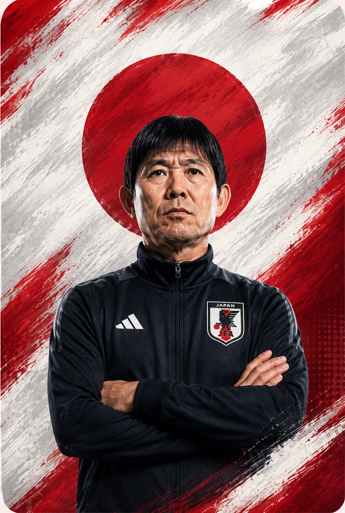

MOMENTOS HISTÓRICOS
1998 — A primeira participação A Seleção Japonesa estreou em Copas na Copa do Mundo FIFA de 1998. Apesar das derrotas, foi um marco histórico para o futebol japonês.
2002 — Copa em casa e classificação histórica Na Copa do Mundo FIFA de 2002, o Japão sediou o torneio pela primeira vez e avançou às oitavas de final, conquistando sua melhor campanha até então.
2010 — Japão surpreende o mundo Na Copa do Mundo FIFA de 2010, o Japão venceu Seleção Dinamarquesa por 3x1 e chegou novamente às oitavas, sendo eliminado nos pênaltis para a Seleção Paraguaia.
2018 — Quase eliminando a Bélgica Na Copa do Mundo FIFA de 2018, o Japão abriu 2x0 contra a Seleção Belga nas oitavas, mas sofreu a virada por 3x2 nos minutos finais em um dos jogos mais emocionantes da Copa.
2022 — Vitórias históricas sobre gigantes Na Copa do Mundo FIFA de 2022, o Japão chocou o mundo ao vencer a Seleção Alemã e a Seleção Espanhola na fase de grupos, terminando em primeiro lugar no grupo.
